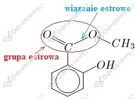

Zadanie 1
a)
b)
Zadanie 2
a) etanian metylu
b) metanian etylu
Zadanie 3
a)
- nazwa systematyczna kwasu karboksylowego: kwas etanowy
- nazwa systematyczna alkoholu: pentanol
- wzór półstrukturalny kwasu karboksylowego:
- wzór półstrukturalny alkoholu:
b)
- nazwa systematyczna kwasu karboksylowego: kwas metanowy
- nazwa systematyczna alkoholu: butanol
- wzór półstrukturalny kwasu karboksylowego:
- wzór półstrukturalny alkoholu:
Zadanie 4
Izomery butanianu metylu:
- - propanian etylu
- - etanian propylu
- - metanian butylu
- - 2-metylopropanian metylu
- - etanian 2-propylu
- - metanian 2-butylu
- - metanian 2-metylopropylu
- - metanian 2-metylo-2-propylu
Zadanie 5
Równanie reakcji:
Nazwa systematyczna:
metanian etylu
Zadanie 6
Równanie reakcji:
Zadanie 7
Opisany wzór salicylany metylu:
